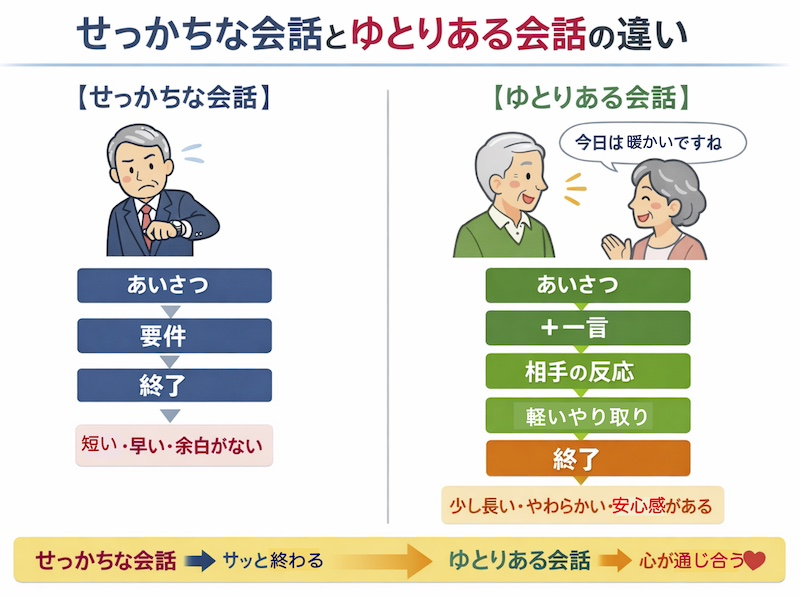
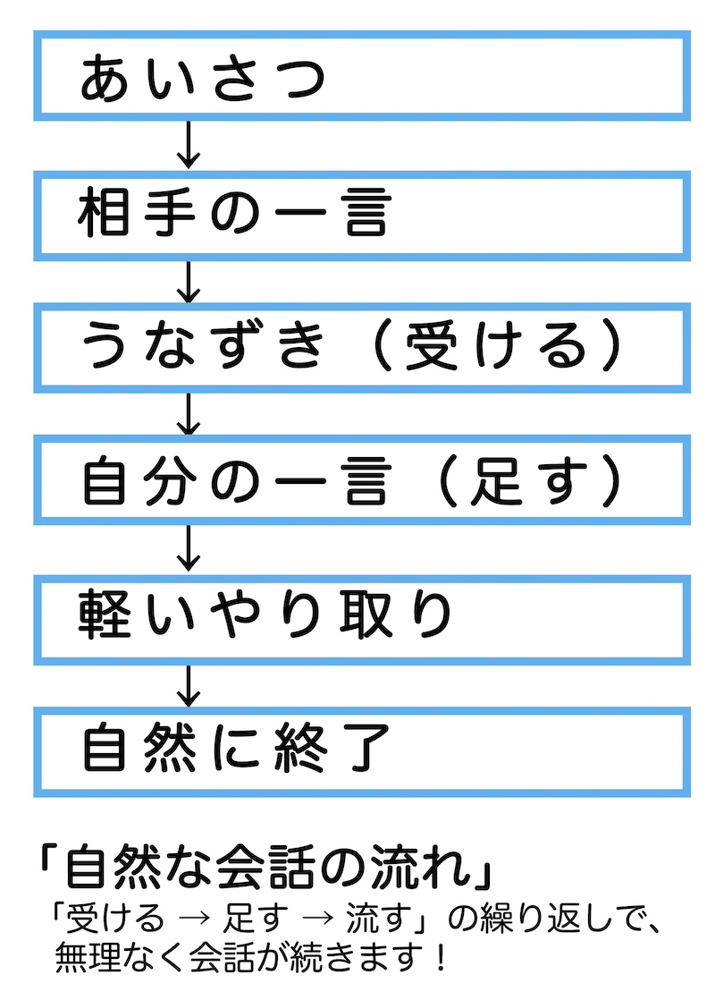
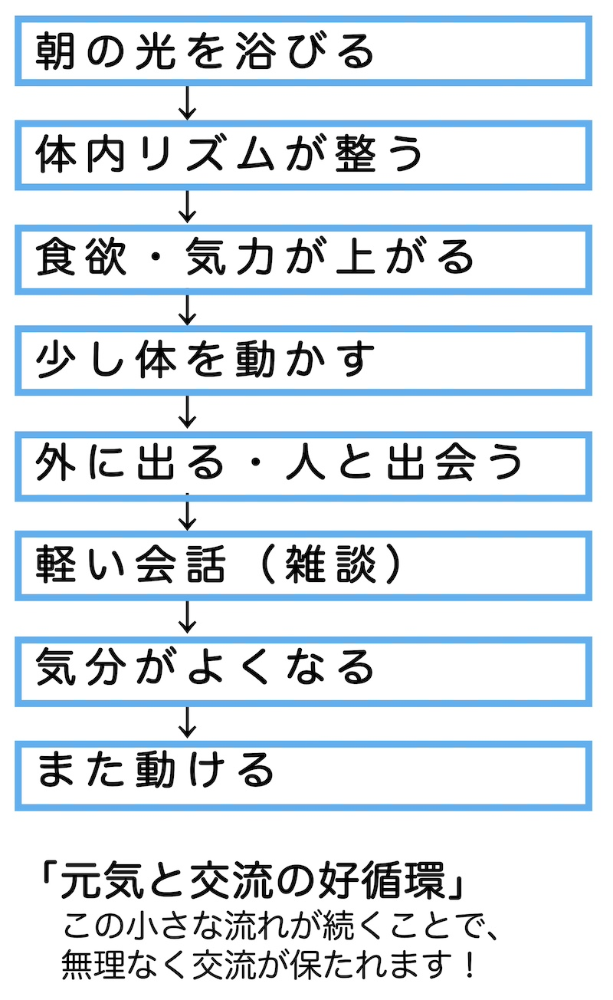

公開日：2026年7月｜最終更新：2026年8月
「せっかちな人」は、交流を遮断しやすいと言われています。
特に、頭の回転が速い人ほど、「結論を急ぐ」「相手の話を途中で理解していまう」「次の行動（話題）に意識が移る」傾向があり、話題が途切れやすいようです。雑談（会話）は「脳トレ」と考えて実践しましょう。

雑談（会話）は、立ち話であっても、情報交換ということ以外に、次のような重要な機能があります。
つまり、雑談は「意味のある内容」ではなく「意味を持つ行為」なのです。
コラム参照 ↓
このように捉えると、「時間の浪費」ではなく、「軽い認知トレーニング」になります。
重要なのは、「量」ではなく、頻度、続ける、継続性です。
無目的な会話が苦手な人でも、「無意味感」がかなり減ります。
このように考えると、雑談（立ち話）に過剰な意味を求めなくなります。
交流において効率を重視すると「要点だけを話す」「無駄を省く」となりますが、
対人関係では、「間」「余韻」「ちょっとした一言」が関係性を作り、体験の共有が図れます。
コラム参照 ↓
「雑談は”始め方”で8割決まる」と言われています。
「同じ時間・同じ場所にいる」こと自体が、立派な話題になります。
相手：「今日はちょっと寒いですね」→ 「そうですね、朝は冷えましたね」
相手の言葉にうなずきながら共感します。まずは「受ける」です。
「昨日より気温が下がったみたいですね」
自分の一言を軽く加えます（短くてOK）。
「体調崩しやすい時期ですね」
無理に広げず、自然な流れでやり取りを続けます。

雑談は特別な技術ではありません。
あいさつに一言を添えるだけで、脳と心は自然に動き出します。
「少し話すこと」を習慣にすることが、日々の良い刺激につながります。
人との交流や会話は、「気力」や「体力」に大きく影響されます。
会話の工夫も大切ですが、その前に「動ける元気」を保つことが基本になります。
最近、人と話すのが億劫になってきたと感じる場合、性格の問題ではなく、
生活のリズムや体調の影響であることも少なくありません。
朝起きたらカーテンを開け、光を取り入れましょう。
朝の光は体内時計を整え、気分や意欲を高める働きがあります。
可能であれば、外に出て数分歩くとより効果的です。
食事量が減ると、体力だけでなく気力も低下しやすくなります。
特に、肉・魚・卵・大豆などのたんぱく質を意識してとることが大切です。
散歩や軽い体操など、無理のない運動を続けることで、体力とともに気分も上がります。
「少し外に出る」ことが、そのまま人との出会いや会話のきっかけになります。
日々心がけて、生活の土台、身体作りを！！

会話を増やそうとする前に、まずは生活のリズムを整えることが大切です。
朝の光、食事、運動という基本を意識することで、自然と人と関わる気持ちが生まれてきます。
「少し元気になること」が、「少し話すこと」につながっていきます。